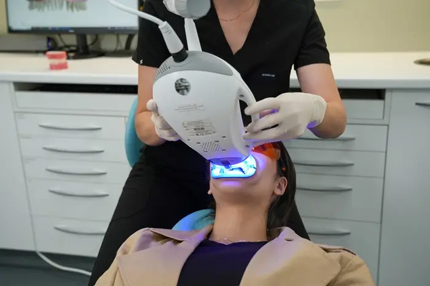

What is Zoom teeth whitening? What are the benefits of professional teeth whitening? How long does Zoom teeth whitening last? These are all excellent questions that you need answered before undergoing a teeth whitening treatment.
Image placeholderPhoto: in-chair Zoom whitening, the light positioned over a patient’s smilezoom-whitening-light.webp
Zoom teeth whitening can lead to a number of positive impacts on your everyday life.
With a whiter, brighter smile, you can feel more confident socially and professionally, knowing that you will make a dazzling first impression.
Below, our team answers the questions we are asked most often, from what the treatment is to how long it lasts. For prices and the take-home option, see professional teeth whitening.
What is Zoom teeth whitening?
Zoom teeth whitening is a type of professional teeth whitening treatment.
It uses a specially designed peroxide system to alleviate discolouration on the enamel and dentin of teeth. It treats discolouration by bleaching away stains without damaging your permanent tooth structure.
What conditions can Zoom teeth whitening treat?
Zoom teeth whitening can treat a number of conditions that cause discolouration or staining to teeth. In general, there are two kinds of discolouration: intrinsic and extrinsic.
Teeth whitening treatments typically treat extrinsic stains on your natural teeth.
Image placeholderIllustration to be replaced with a photo
Typically treated by whitening
Extrinsic discolouration occurs due to staining from outside agents. It can occur due to smoking, drinking highly pigmented beverages like red wine, coffee, or tea, or eating foods with dyes.
Ask us first
Intrinsic discolouration arises from within the tooth. Often, it’s the result of tooth trauma, infection, medication, ageing, or childhood illness.
Why professional, and is it right for me?
A dentist helps you pick the whitening that suits your smile and your mouth health.
Why professionalA dentist helps you choose
Why choose professional teeth whitening?
A dentist can help you choose.
Read moreShow less
With so many over-the-counter teeth whitening options, why choose professional teeth whitening?
Put simply, without the help of a dentist, it can be challenging to know which teeth whitening option is right for your unique mouth health. A dentist at Beyond 32 Dental can help you choose the teeth whitening procedure that’s right for your smile goals and also healthy for your mouth.

Zoom chairsideUnder an houron average
Is Zoom teeth whitening right for me?
If your mouth is in reasonable health, it might be.
Read moreShow less
At Beyond 32 Dental, we use Zoom chairside whitening technology. A skilled, experienced dentist at Beyond 32 Dental can determine if Zoom teeth whitening is right for you.
If you experience severe tooth sensitivity, we also offer professional at-home whitening kits that contain a lower concentration of bleaching gel so you can whiten your teeth gradually.
What happens at a Zoom appointment?
The actual whitening phase of the process is fairly simple. Step through it below.
BeforeGetting ready
What happens before a Zoom teeth whitening procedure?
This first step might involve a quick teeth clean and an examination to ensure gum health. Your dentist will take some precautionary measures to protect your gums from the bleaching agent. This involves shielding your gums and soft tissue with cotton and cheek retractors.
Additionally, your dentist will record your starting tooth shade so that you can measure it against your results.
How does the whitening agent work?
Your dentist will apply a whitening agent to the fronts of your teeth and, to accelerate the process, shine an LED curing light onto your teeth.
Three 15-minute rounds
This step will be performed three times: there will be three 15-minute rounds of letting the whitening agent lighten and brighten your teeth.
Checked after every round
Your dentist will monitor your progress after each round.
What about aftercare?
Afterward, your dentist will advise you to avoid certain food, drinks, and activities, such as smoking, so the effects are long-lasting.
Because some patients may experience some sensitivity for a day or two following the procedure, your dentist will apply a post-treatment gel to reduce sensitivity and protect your tooth enamel.
You will be given a take-home whitening kit that includes customised whitening trays and a whitening gel, so you can touch up the brightness of your smile any time you want.
Enjoy your smile!
The last step of the process is simply to enjoy your new brighter smile for 12–24 months. The duration of the treatment results will depend on your lifestyle habits. Tooth enamel is porous, and your teeth can become stained again.
How long does Zoom teeth whitening last?
< 1 hourfor the procedure, on average, when administered by a qualified professional
In terms of the length of the procedure, Zoom teeth whitening is an incredibly quick option. Zoom teeth whitening takes less than an hour, on average, when administered by a qualified professional.
The results of Zoom teeth whitening, however, can last for months to years depending on your diet and how you look after them.
Our aftercare guide covers what to eat and drink in the first 48 hours, and the habits that help.
Contact an experienced dental practice today
If Zoom teeth whitening sounds like it could be right for you, contact Beyond 32 Dental on (02) 9158 6334. We can answer any questions you have and get you started on your journey towards a brighter and more confident smile.
A type of professional teeth whitening treatment that uses a specially designed peroxide system to alleviate discolouration on the enamel and dentin of teeth, bleaching away stains without damaging your permanent tooth structure.
What conditions can it treat?
Teeth whitening treatments typically treat extrinsic stains on your natural teeth: staining from outside agents such as smoking, red wine, coffee, tea or foods with dyes. Intrinsic discolouration, from within the tooth, arises from things like trauma, infection, medication, ageing or childhood illness.
Is Zoom teeth whitening right for me?
If your mouth is in reasonable health, in-chair Zoom teeth whitening might be an excellent option for you. If you experience severe tooth sensitivity, we also offer professional at-home whitening kits with a lower concentration of bleaching gel.
How long does it take, and how long does it last?
The procedure takes less than an hour, on average. The results can last for months to years depending on your diet and how you look after them.
Will my teeth be sensitive afterwards?
Some patients may experience some sensitivity for a day or two following the procedure, so your dentist will apply a post-treatment gel to reduce sensitivity and protect your tooth enamel.
Any surgical or invasive procedure carries risks. Before proceeding, you should seek a second opinion from an appropriately qualified health practitioner.